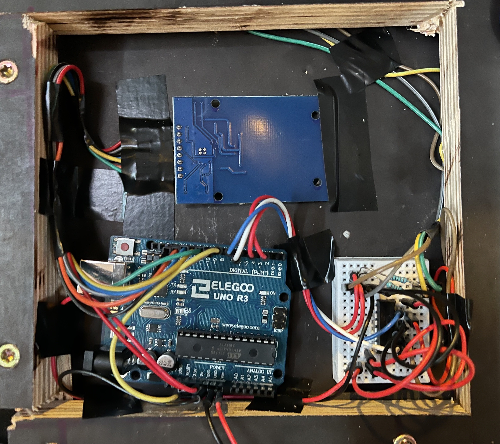
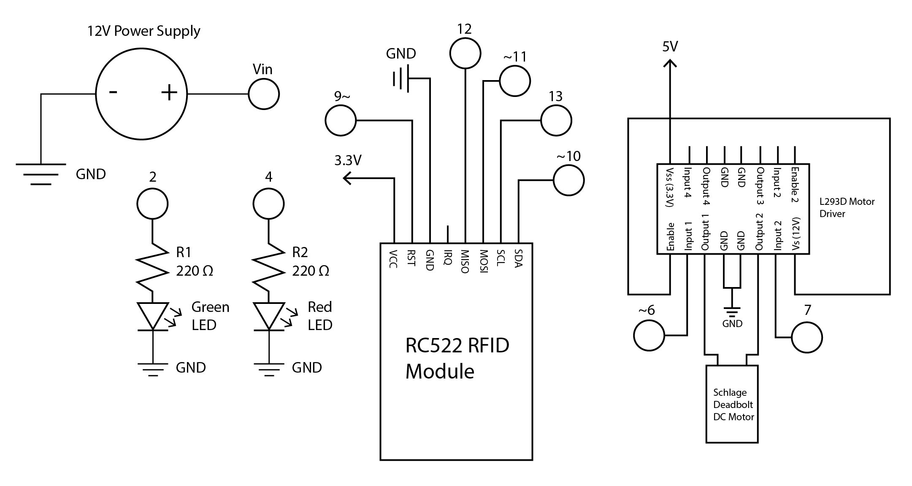

Final Project: NFC Deadbolt!


Final project front and circuit. This is an electronic deadbolt with a keypad which I modified to be controlled by an Arduino Uno which uses an RFID tag reader to unlock the deadbolt. Green and Red LEDs are used above the RFID scanner to signal if the tag is accepted or denied access.

Above circuit in action. The deadbolt is locked by default. When an RFID tag with the ID matching the master ID is tapped on the sensor, the deadbolt is unlocked for a few seconds, allowing the user to open or close the lock. Access is then turned off when the green LED turns off. If a different tag is tapped, the red LED will signal that the tag is not accepted.

Schematic for the above circuit. The Arduino is powered by a 12V power supply. Other components include the two LEDs shown on the bottom left with 220 ohm resistors before each LED. The RFID module schematic is shown in the middle and uses 3.3V power from the Arduino. RFID module tutorial from: https://lastminuteengineers.com/how-rfid-works-rc522-arduino-tutorial/. The schematic for the L293D motor driver which controls the deadbolt is on the far right and uses 5V power from the Arduino. It receives input from pins 6 and 7 of the Arduino and controls the DC motor located inside the deadbolt. L293D Motor Driver tutorial from: https://www.instructables.com/How-to-use-the-L293D-Motor-Driver-Arduino-Tutorial/.
#include <SPI.h> // library for communication with RFID module
#include <MFRC522.h> // library for reading RFID module easily
#define RST_PIN 9 // pin for reset/power down of RFID
#define SS_PIN 10 // pin for signal input form RFID
#define GREEN_PIN 2 // pin for green LED
#define RED_PIN 4 // pin for red LED
byte readCard[4]; // variable to assist in converting RFID ID from bytes
String MasterTag = "5CE1EE37"; // ID for master tag (the one that unlocks the lock)
String tagID = ""; // variable for the ID tapped on the reader
MFRC522 mfrc522(SS_PIN, RST_PIN); // creates object for library to access RFID module
int motorPin1 = 6; // motor pins for motor driver
int motorPin2 = 7; // motor pins for motor driver
void setup() {
SPI.begin(); // bgins communication with RFID reader
mfrc522.PCD_Init(); // initalizes RFID module object
pinMode(motorPin1, OUTPUT); // sets pin to output
pinMode(motorPin2, OUTPUT); // sets pin to output
pinMode(GREEN_PIN, OUTPUT); // sets pin to output
pinMode(RED_PIN, OUTPUT); // sets pin to output
}
void(* resetFunc) (void) = 0; // function to reset the Arduino
void loop() {
if (mfrc522.PICC_IsNewCardPresent()) { // If RFID tag is detected
if (mfrc522.PICC_ReadCardSerial()) { // If RFID tag is readable
tagID = ""; // clears current tag ID
for ( uint8_t i = 0; i < 4; i++) { // converts current tag ID from bytes
tagID.concat(String(mfrc522.uid.uidByte[i], HEX)); // converts current tag ID from bytes
}
tagID.toUpperCase(); // converts tag ID to uppercase
mfrc522.PICC_HaltA(); // halts communication with RFID module
if (tagID == MasterTag) { // if tag scanned matches master ID
digitalWrite(GREEN_PIN, HIGH); // turns green LED on
digitalWrite(motorPin1, HIGH); // turns lock motor on
digitalWrite(motorPin2, LOW); // turns lock motor on
delay(1000); // waits 1000 ms
digitalWrite(motorPin1, LOW); // turns lock motor off
digitalWrite(motorPin2, LOW); // turns lock motor off
delay(4000); // waits 4000 ms
digitalWrite(GREEN_PIN, LOW); // turns green LED off
digitalWrite(motorPin2, HIGH); // reverses motor direction to lock
digitalWrite(motorPin1, LOW); // reverses motor direction to lock
delay(1000); // waits 1000 ms
digitalWrite(motorPin1, LOW); // turns motor off
digitalWrite(motorPin2, LOW); // turns motor off
resetFunc(); // restarts Arduino to avoid some bugs that were encountered
} else { // if ID does not match master ID
digitalWrite(RED_PIN, HIGH); // turn red LED on
delay(2000); // waits 2000 ms
digitalWrite(RED_PIN, LOW); // turns red LED off
resetFunc(); // restarts Arduino to avoid some bugs that were encountered
}
}
}
}
Code for the Arduino Circuit. the SPI.h and MFRC522.h libraries are used to communicate with the RFID module easily. Pins are defined first to make code simpler throughout. Some variables are defined such as the master tag ID and scanned tag ID as well as creating the RFID object through the library.
Setup for the code includes starting communication with the RFID module through the libraries and setting pin modes to OUTPUT.
The loop of the code starts with two "if" statements that check if a tag is detected and if the tag is readable, then converts the tag ID from bytes to a string of all uppercase characters and numbers. If this tag matches the master ID, the green LED is turned on and the DC motor inside the deadbolt is turned on for 1 second, allowing the deadbolt to be unlocked. 4 seconds later, the DC motor is reversed for 1 second and the the lock is no longer able to be turned. If the scanned tag ID does not match the master ID, the red LED is turned on for 2 seconds. After each of these two scenarios, the Arduino is reset using a reset function. This is to avoid some bugs that were found during testing, and resetting the Arduino is a simple and efficient way to avoid these.
Demo of the project in action.